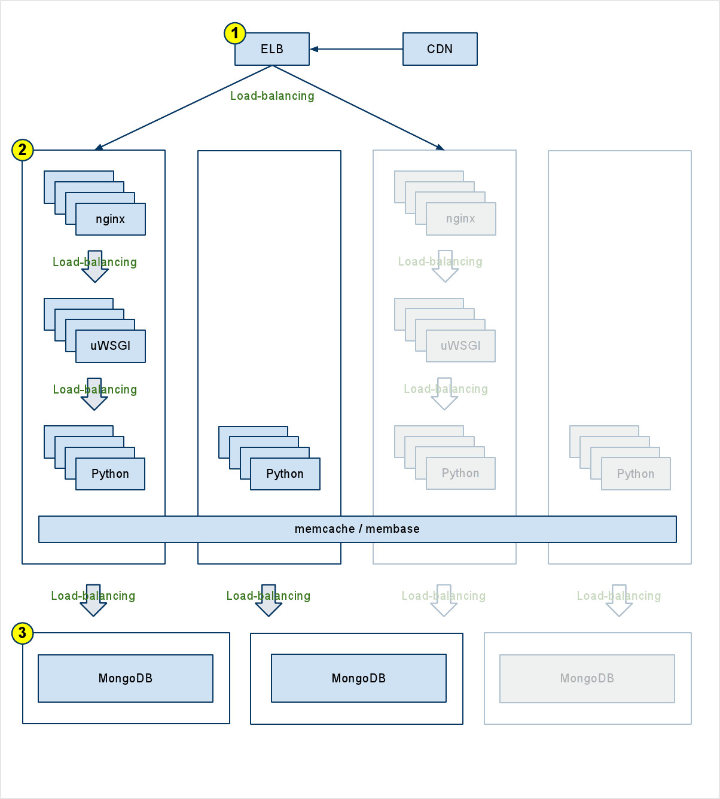

Reality dating game show
Contestants compete to be selected through elimination rounds.
Only 25 participants in the TV show; a Facebook game lets the audience play too!

Pyramid Routes + Views
Core API + Data Access Layer
Views + Templates
@view_config(route_name='audition_enter', http_cache=0,
renderer='bachelor:templates/show/audition/enter.mako')
def audition_enter(self):
return dict(show=self._show)
@view_config(route_name='audition_enter_confirm', request_method='POST',
xhr=True, renderer='json', http_cache=0)
def audition_ajax(self):
if self.request.POST.get('photo'):
photo = json.loads(self.request.POST.get('photo'))['url']
else:
photo = None
self.show_api.audition(self._show, picture=photo)
return dict(next=self.request.route_path('audition_list'))
@view_config(route_name='event_list', http_cache=0,
renderer='bachelor:templates/event/list.mako')
def list_(self):
""" Return a list of events, customized for the user. """
page = int(self.request.params.get('page', 1))
reward = Tuneable.get_event_gain(self.user_api.level(self.user))
cost = Tuneable.get_topic_cost(self.user_api.level(self.user))
score = self.user_api.get_score()
can_participate = cost.validate(score)
details = cost.validate(score, True)
notifications = self.user_api.notifications(self.user)
allowed_cities = Tuneable.get_allowed_cities(self.user_api.level())
current_city = self.request.session.get('current_city', None)
if self.request.method == 'POST' and 'city' in self.request.params:
current_city = self.request.POST.get('city', None)
if not current_city:
current_city = allowed_cities[0]
elif current_city not in allowed_cities:
current_city = 'hell' # easter egg for those who like to play with
# data
self.request.session['current_city'] = current_city
self.request.session['allowed_cities'] = allowed_cities
paginated_events = Pagination(self.event_api.get_user_events(
with_events=True, city=current_city),
Tuneable.get_per_page('events'),
Tuneable.get_pages_per_chunk())
return dict(
user_events=paginated_events.get_page_items(page),
pagination=paginated_events,
current_page=page,
reward=reward,
requirement=cost,
can_participate=can_participate,
req_details=details,
notifications=notifications,
cities=Tuneable.get_cities(),
current_city=current_city,
allowed_cities=allowed_cities,
)
We keep them separate
u = UserIO.one(user_id)
if not u:
topic = []
else:
topic = u['answers'].get(event_id, {}).get(str(topic_id), [])
topic = UserEvent.get_topic_answers(user_id, event_id, topic_id)
def matches(self, user_id, event_id, topic_id):
""" Return a list of users whose answer is similar. """
topic = UserEvent.get_topic_answers(user_id, event_id, topic_id)
if topic is None:
return None
return UserEvent.matches(user_id, event_id, topic_id)
Well-suited to building clusters.
Harder to break.
Choices for MongoDB in Python are limited to MongoEngine and MongoKit.
So we rolled our own on top of raw pymongo.
But then we were even more limited.
Switching to MongoEngine.
NoSQL == no migrations, right?
Is lettuce a vegetable or a testing platform?!
Feature: Main show
In order ward off boredom and hopefully get laid
As a facebook user and bachelor wannabe
I want to take part in the best of the best
And that means playing the Bachelor game
# Actors:
# - B: Bachelor
# - C: Contestant
# - S: System
# - F: Friend
Scenario: B starts a show
Given B has enough points to start a show
When B initiates a new show
And B selects four of his pictures
And B starts the audition
Then B should loose the expected points to start a show
And B should not yet have access to the audition results
And B should not be able to start another show
Scenario: S selects the audition winners
Given the allotted audition time has elapsed
And 24 C or more have entered the audition
When S selects the 24 best matches
Then there should be 24 C in the show
And the lives of countless others shall be ruined
Lettuce steps map to Python code:
Scenario: C looses episode 1
Given C has lost episode 1
When C asks for episode 1 results
Then C should be informed that he failed the profound cuteness test
And C should gain the points earned by episode 1 losers
And C should should not have access to episode 2
@step(u'Then C should be informed that he failed the profound cuteness test')
def then_c_should_be_informed_that_he_failed_the_profound_cuteness_test(step):
w.golem.as_bachelor()
losers = w.golem.get('12_roses_losers', True)
for l in losers:
user = w.golem.user_api.get_user(l)
w.golem.as_contestant(user)
show = w.golem.show_api.get_by_id(w.golem.show_id)
is_winner = w.golem.show_api.collect_12roses(show=show)
assert not is_winner
Take advantage of an existing account, friends, and sharing. Great for the product, no fun for developers.
This is what some complicated Facebook code looks like.
Only the most critical ones...
K.I.S.S.
Seriously, hierarchical organization is easy to understand and use.
Explain what it does and any nuances.
Type, possible options (and what each option means), and if its required.
Multiplayer social games are step and role based.
Certain tasks have time limits or system requirements
Sample gamesteps codeMongoDB as a low-latency queue.
/
#